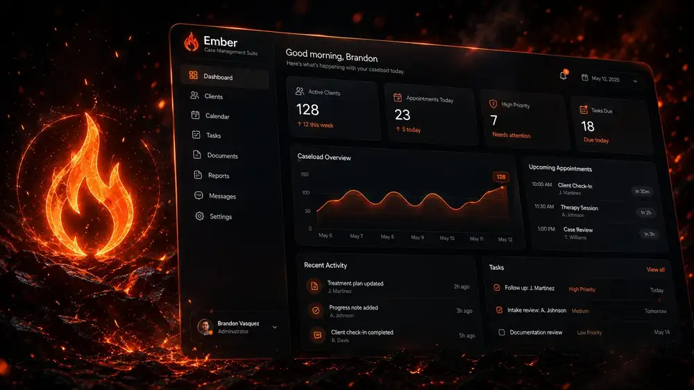
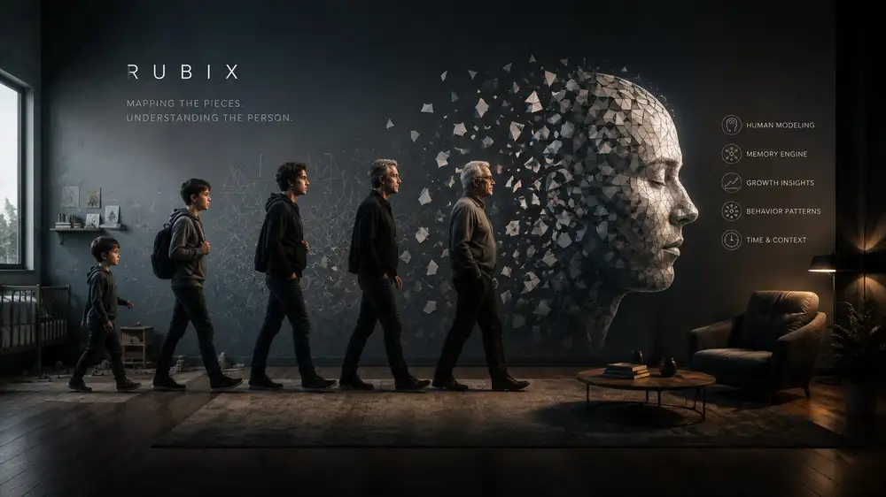
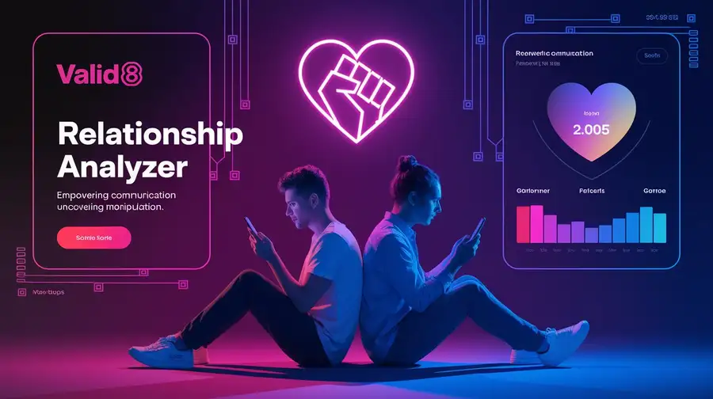

Technology that solves
human problems.
Lifestream Labs develops AI systems focused on behavioral healthcare, human understanding, personal assistance, and creative intelligence — built by people who have worked inside the problems they're solving.
Explore Our WorkUnderstand
We build systems that deepen human understanding — of behavior, relationships, and the paths that shape who people become.
Assist
We create intelligent tools that make real help more accessible — for clinicians, case managers, and the people they serve.
Connect
We foster connections between people and the resources, insight, and support that move them forward.
A portfolio of solutions, not a list of apps.
Each project starts with a real problem — one we've encountered directly in clinical, behavioral health, or human-systems work — and is built to solve it.

Ember
The intelligent workspace for behavioral health professionals. AI-assisted documentation, treatment planning, and case management built around real clinical workflows.
Learn moreVirgil St.
Helping people navigate housing, healthcare, benefits, food, employment, and recovery through one intelligent resource platform.
Learn more
Rubix
Mapping how people become who they are — through memory, experience, behavior, and lifelong psychological development.
Learn more
Valid8
AI-powered conversation analysis that uncovers manipulation, emotional dynamics, attachment patterns, and relationship health.
Learn moreEverything we build fits one of four missions.
- Ember FLAGSHIP
- Virgil St. FLAGSHIP
- Case Management Suite
- Rubix FLAGSHIP
- Valid8 FLAGSHIP
- High Fidelity
- Athena
- Voice Studio
- Hillary
- Fable
- Madame Eve
Every project answers three questions.
Before anything gets built, we're clear on the problem — and honest about why existing solutions fall short.
What problem exists?
We start from a real, observed problem — not a market opportunity. Most of our work traces back to something we encountered directly in clinical or human-systems work.
Why do current solutions fail?
Legacy tools weren't built around how the work actually happens. We study the gap between what people need and what they're given before designing anything.
How does this solve it?
Every product is judged by whether it measurably reduces the burden it was built to address — for the professional, the client, or both.
From behind the camera to behind the case file to behind the model.
Brandon's path to Lifestream Labs didn't start in a lab. It started in photography — learning to see people clearly, honestly, and with patience. That same attention carried into behavioral health and case management, where he spent years inside the systems meant to help people navigate housing, recovery, and care — and saw firsthand where those systems break down.
That combination — an eye for people, and hands-on experience with the tools meant to serve them — is what led him into AI development, and ultimately to founding Lifestream Labs: a company built on the belief that the best AI doesn't come from chasing trends, but from understanding people well enough to build for them honestly.
Build something that matters.
Whether you're an employer, investor, collaborator, or just curious — we'd like to hear from you.
Explore Our Work